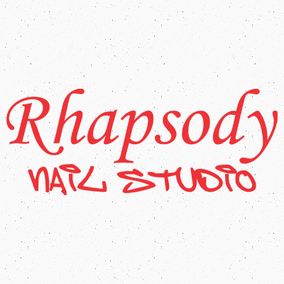
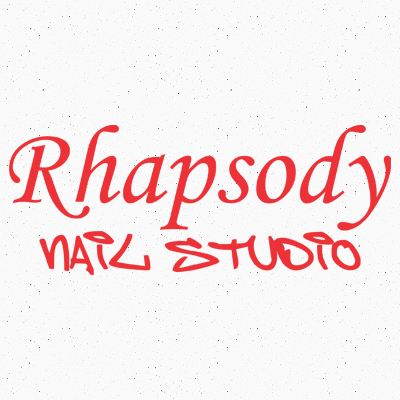
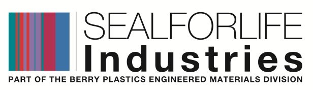
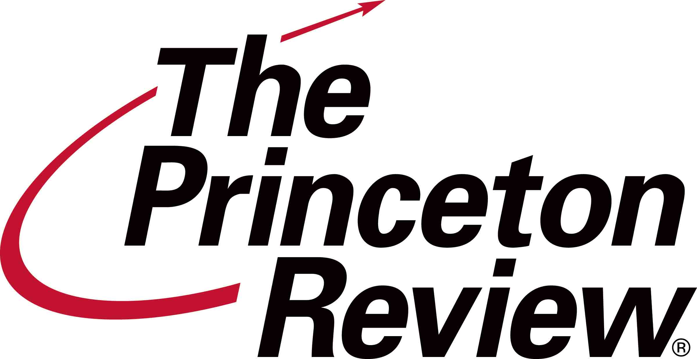
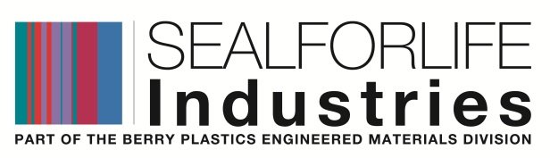
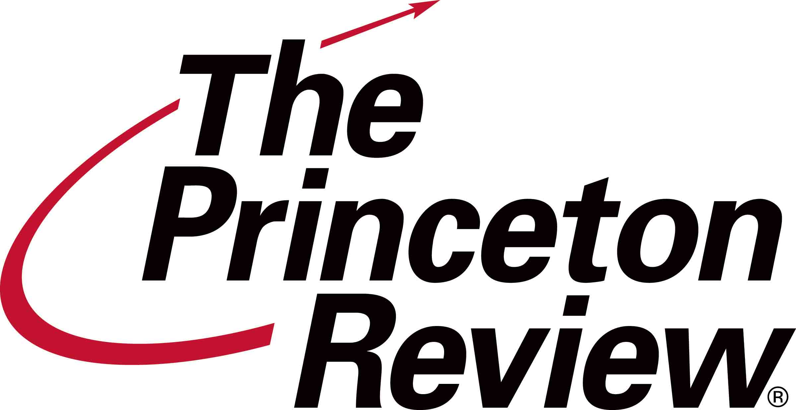

ONLINE12th - 15th April, 2014
OFFLINE16th April, 2014
ENTER THE SITE!
We're back!
BVPIEEE, the IEEE Student Branch of Bharati Vidyapeeth’s College of Engineering, New Delhi, presents FERVOUR 2014!
After ‘Going green’, ‘Changeneering’ and 'COMBATING VIRUSES: Infection for Perfection!', we're back with a new theme:
FERVOUR '14: LIVE YOUR REALITY IN THE VIRTUAL WORLD
Fervour, now in its 7th edition, will be held on 16th April. It's one of the biggest technical-cum-managerial festivals in Delhi and promises to deliver to the fervent admirers of technical, managerial and even literary activities.
Get all your technical fix at Fervour 2014, which promises to be bolder and bigger! Browse our website to know all things fervour! In addition, we will be conducting our flagship Technical Paper Presentation, the 'National Student Symposium' on the same day.
As part of the run-up to the fest, we will be conducting an Online Fest from 12th-15th April. Watch this space for more details.
 



ENTER THE SITE!
Finally! A kickstart for Fervour'14!
We bring to you the online edition of fervour just before we have the real showdown.
The Online Fervour starting from 12th April and running till 15th April, promises to bring you the most amusing and creative events, bigger and better than the teaser fervour, not to mention lots of Prizes too!
Given below is the list of events:
So get ready to grab as many prizes as you can!
We are already accepting entries for the events:
 


